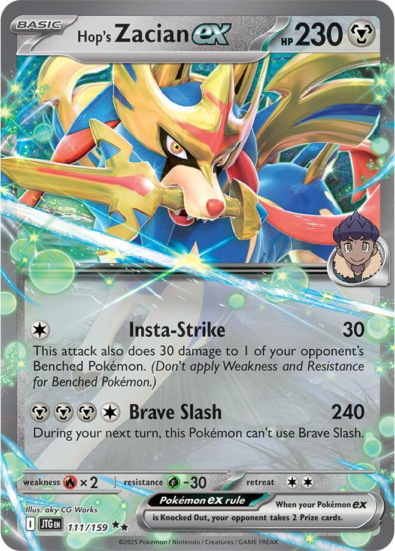
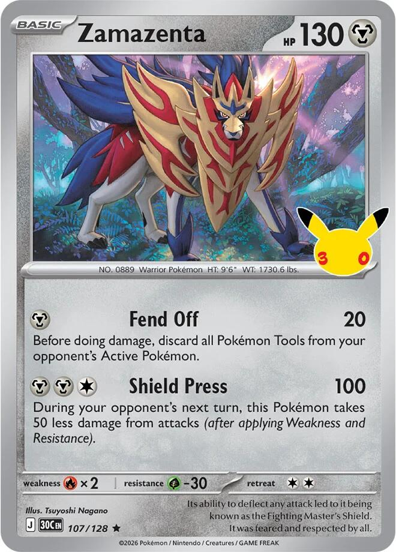
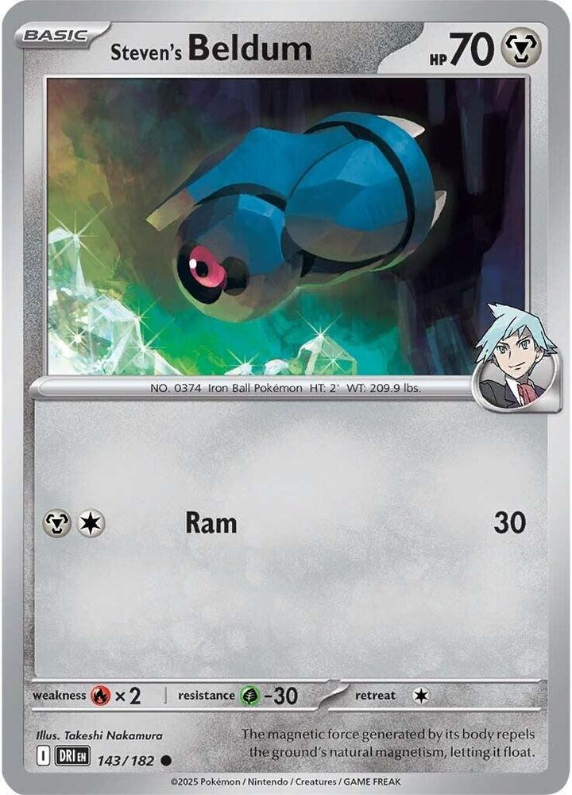
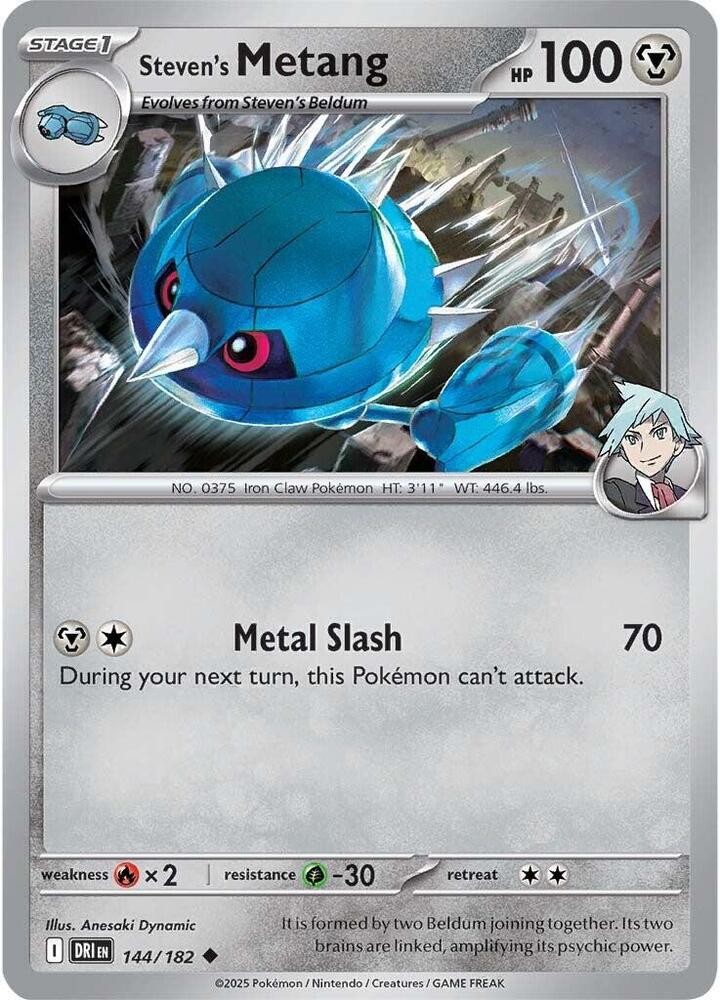
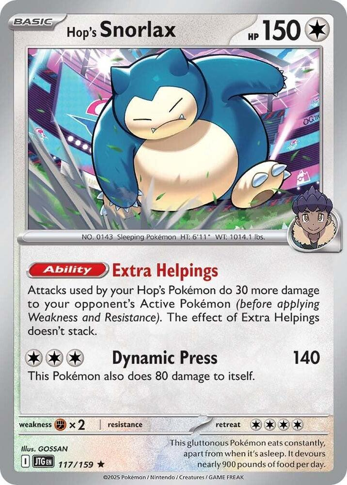
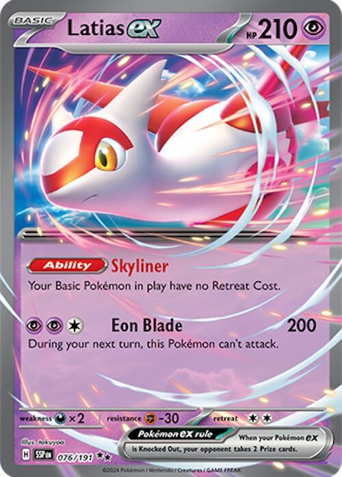
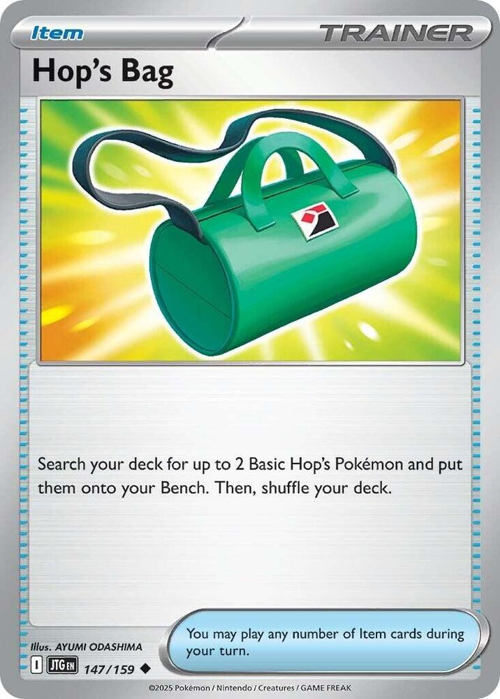
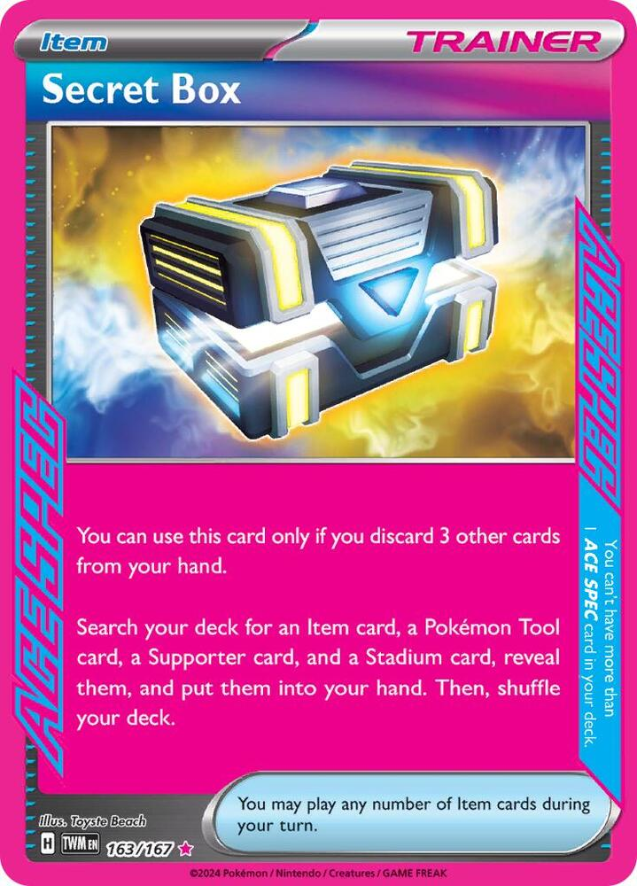
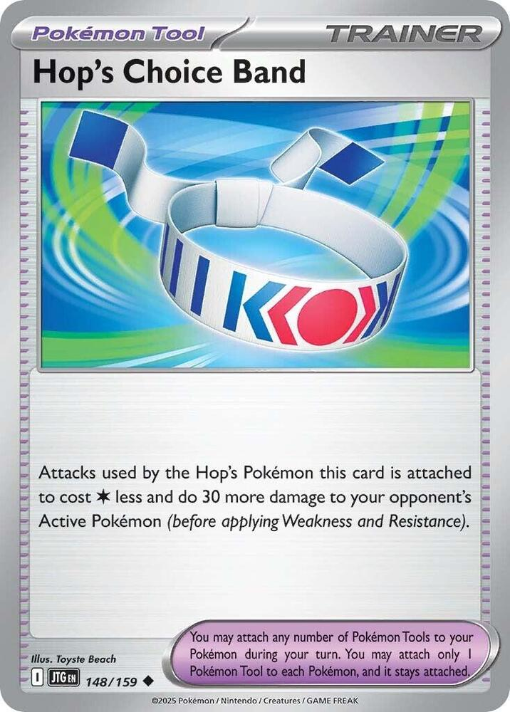
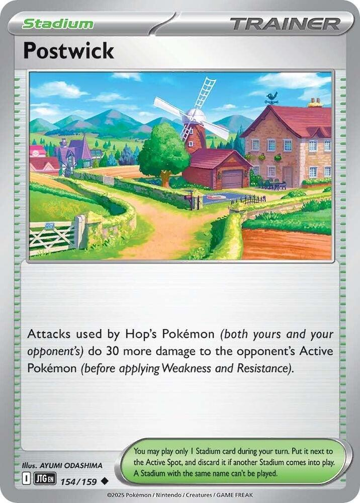

x4
x2
x3
 x2
x2
x2
 x4
x4 x3
x3![Boss's Orders [Ghetsis]](./assets/654453_bosss-orders-ghetsis.jpg) x2
x2 x2
x2 x4
x4 x3
x3 x3
x3 x2
x2


x4

x4 x10
x10
 Steel Wolves
Steel Wolves 
A tournament-legal 60 for TCG Live, built on Hop's Zacian ex with a shield dog and a steel engine behind it
← back to all decksThree cards in this deck each add 30 damage, and they all add it to the same attack.
Brave Slash is printed at 240. Hop's Choice Band adds 30, Postwick adds 30, and Hop's Snorlax adds 30, so the number Fox actually attacks with is 330. Every one of those boosts reads "to your opponent's Active Pokémon," so they land on the thing in front of you and nowhere else.
| What is attached | Brave Slash | One-shots |
|---|---|---|
| nothing | 240 | the 2-prize ex under 240 |
| Choice Band | 270 | N's Zoroark ex |
| Band and Postwick | 300 | Archaludon ex |
| Band, Postwick, and Snorlax | 330 | Dragapult ex, and everything below it |
330 is the number that matters, because Dragapult ex sits at 320 HP and is the most common deck on the ladder. The two 340 HP Megas survive by ten.
The Choice Band pays for itself twice. It also makes every Hop's attack cost one  less, which drops Brave Slash from four Energy to three and drops Insta-Strike to nothing at all. A Zacian with a Band and no Energy still attacks for 120 to the Active and 30 to a Bench. That is the floor of this deck, and most decks do not have one.
less, which drops Brave Slash from four Energy to three and drops Insta-Strike to nothing at all. A Zacian with a Band and no Energy still attacks for 120 to the Active and 30 to a Bench. That is the floor of this deck, and most decks do not have one.
What the ladder lists do next is run four Philippe and hope. This build does something steadier. Steven's Metagross ex sits on the Bench and attaches a Metal Energy out of the deck every single turn for free, so the manual attachment plus X-Boot is two Energy a turn without spending a Supporter. That turns a turn-three Brave Slash into a turn-two Brave Slash, and it keeps working after the discard pile is empty.
Zamazenta is the answer to the one weakness in the Zacian plan. Brave Slash cannot be used twice in a row, so every big turn is followed by a turn with nothing to do. Zamazenta steps into that gap, hits for 100, and takes 50 less while it stands there.

x4
x2
x3
x2
x2
x4x3x2x2x4x3x3x2


x4
x4x10Pokémon (15)
| Qty | Card | Set | Number | Reg |
|---|---|---|---|---|
| 4 | Hop's Zacian ex | Journey Together | 111 | I |
| 2 | Zamazenta | 30th Celebration | 107 | J |
| 3 | Steven's Beldum | Destined Rivals | 143 | I |
| 1 | Steven's Metang | Destined Rivals | 144 | I |
| 2 | Steven's Metagross ex | Destined Rivals | 145 | I |
| 2 | Hop's Snorlax | Journey Together | 117 | I |
| 1 | Latias ex | Surging Sparks | 076 | H |
Trainers (34)
| Qty | Card | Type | Set | Number | Reg |
|---|---|---|---|---|---|
| 4 | Lillie's Determination | Supporter | Mega Evolution | 119 | I |
| 3 | Team Rocket's Petrel | Supporter | Destined Rivals | 176 | I |
| 2 | Boss's Orders | Supporter | Mega Evolution | 114 | I |
| 2 | Philippe | Supporter | Chaos Rising | 079 | J |
| 4 | Ultra Ball | Item | Mega Evolution | 131 | I |
| 3 | Rare Candy | Item | Mega Evolution | 125 | I |
| 3 | Buddy-Buddy Poffin | Item | Temporal Forces | 144 | H |
| 2 | Switch | Item | Mega Evolution | 130 | I |
| 1 | Hop's Bag | Item | Journey Together | 147 | I |
| 1 | Secret Box | Item | Twilight Masquerade | 163 | H |
| 4 | Hop's Choice Band | Tool | Journey Together | 148 | I |
| 1 | Air Balloon | Tool | Ascended Heroes | 181 | I |
| 4 | Postwick | Stadium | Journey Together | 154 | I |
Energy (11)
| Qty | Card | Set | Number | Reg |
|---|---|---|---|---|
| 10 | Basic Metal Energy | Mega Evolution Energies | 008 | - |
| 1 | Magnetic Metal Energy | Chaos Rising | 085 | J |
15 + 34 + 11 = 60. ✓
Basics: 12 (4 Hop's Zacian ex, 2 Zamazenta, 3 Steven's Beldum, 2 Hop's Snorlax, 1 Latias ex), which is a mulligan rate under 10%. That is the most comfortable opening in the house, and it is why the deck can afford one evolution line.


 Metal
Metal Fire ×2
Fire ×2 Grass -302
Grass -302 legal (Reg I)Insta-Strike (30) - This attack also does 30 damage to 1 of your opponent’s Benched Pokémon. (Don’t apply Weakness and Resistance for Benched Pokémon.)Brave Slash (240) - During your next turn, this Pokémon can’t use Brave Slash.
legal (Reg I)Insta-Strike (30) - This attack also does 30 damage to 1 of your opponent’s Benched Pokémon. (Don’t apply Weakness and Resistance for Benched Pokémon.)Brave Slash (240) - During your next turn, this Pokémon can’t use Brave Slash.The core, at the full four. 230 HP, Basic, 2 Prizes, Retreat 2, Fire Weakness.
Brave Slash does 240 for , and with a Hop's Choice Band attached it costs and does 330. The rider is that it cannot be used again on your next turn, which is not a drawback so much as a rhythm; see game plan 2.
Insta-Strike is the reason this card is different from every other big Basic. It costs , which a Band reduces to nothing, and it does 30 to the Active plus 30 to a Benched Pokémon. With the Band, Postwick, and a Snorlax out, that free attack reads 120 to the Active and 30 to the Bench. The three boosts all name the Active Pokémon, so the Bench half stays at 30 no matter what you stack.
Four copies, because it is the deck and because a prized copy has to be a non-event. Four also means a second Zacian is always ready to attack on the turn the first one is locked out.
 MetalFire ×2Grass -302legal (Reg J)Fend Off (20) - Before doing damage, discard all Pokémon Tools from your opponent's Active Pokémon.Shield Press (100) - During your opponent's next turn, this Pokémon takes 50 less damage from attacks (after applying Weakness and Resistance).
MetalFire ×2Grass -302legal (Reg J)Fend Off (20) - Before doing damage, discard all Pokémon Tools from your opponent's Active Pokémon.Shield Press (100) - During your opponent's next turn, this Pokémon takes 50 less damage from attacks (after applying Weakness and Resistance).The shield dog, and the card that fills the gap Brave Slash leaves. 130 HP, Basic, 1 Prize, Retreat 2.
Shield Press does 100 for , and during your opponent's next turn this Pokémon takes 50 less damage. A 130 HP body that effectively has 180 against one attack is not a wall, but it is an annoyance worth more than one Prize, and the opponent who spends a big attack killing it has spent that attack on a single-prize card.
Fend Off costs one , does 20, and discards all Pokémon Tools from the opponent's Active Pokémon before doing damage. That is the turn-one play going second against any deck leaning on a Tool, and on the current ladder that means the mirror's own Choice Band, an Air Balloon on a pivot, or a Hero's Cape propping up a Mega.
Two copies. It is a role card, not a line, and two means one is available on the off turn without ever drawing a dead second.


 MetalFire ×2Grass -301legal (Reg I)Ram (10)
MetalFire ×2Grass -301legal (Reg I)Ram (10)70 HP and Poffin-legal, and its whole job is becoming Metagross. Ram does 10, which is a number you will never use.
Three copies against two Metagross ex, because Beldum has to be on the Bench a full turn before Rare Candy can touch it. Landing one on turn one is what makes a turn-two X-Boot possible, so this is a card you dig for early and never draw late.

 MetalFire ×2Grass -302legal (Reg I)Metal Slash (70) - During your next turn, this Pokémon can't attack.
MetalFire ×2Grass -302legal (Reg I)Metal Slash (70) - During your next turn, this Pokémon can't attack.The manual road, kept as a single copy. Rare Candy skips it, which is the plan most games. This one copy covers the game where Candy is prized or spent and a Beldum has been sitting on the Bench doing nothing for two turns. Metal Slash does 70 for and locks itself out for a turn, which is a real attack in a pinch.
MetalFire ×2Grass -303legal (Reg I)Metal Stomp (200)The Energy engine, and the reason this build is not the ladder list. Stage 2 from Steven's Metang, 340 HP, 2 Prizes, Retreat 3.
X-Boot is an Ability, once during your turn: search your deck for a Basic Psychic Energy card, a Basic Metal Energy card, or one of each, and attach them to your Psychic and Metal Pokémon in any way you like. This deck runs no Basic Psychic, so read it as one Basic Metal from the deck onto any Metal Pokémon, every turn, for free.
Three things make that better than the Philippe it replaced. It costs no Supporter, so the turn still has a Lillie's or a Boss's in it. It pulls from the deck rather than the discard, so it works on turn two when the discard pile is empty. And it targets any Metal Pokémon, so it charges the Zacian that is about to swing and the Zamazenta waiting behind it in the same sequence of turns.
Metal Stomp does a flat 200 for , which matters in exactly one situation: both Zacians are gone and the 340 HP body is what is left. Do not plan for it, and do not walk this card into the Active Spot to use it.
Two copies. At 340 HP on the Bench it rarely dies, and the second copy is prize insurance on the card the whole Energy plan depends on.
Colorless Fighting ×24legal (Reg I)Dynamic Press (140) - This Pokémon also does 80 damage to itself.
Fighting ×24legal (Reg I)Dynamic Press (140) - This Pokémon also does 80 damage to itself.Thirty more damage from the Bench, for free. Extra Helpings adds 30 to every attack your Hop's Pokémon make against the opponent's Active Pokémon. It needs no Energy and no attention. Bench it and forget it.
The effect does not stack, so a second Snorlax on the board adds nothing. Two copies is redundancy against Prizes and Boss's Orders, not a bigger number. Dynamic Press exists and costs for 140 with 80 recoil; the Retreat 4 on this card tells you what the designers thought of that plan.


 Psychic
Psychic Darkness ×2Fighting -302legal (Reg H)Eon Blade (200) - During your next turn, this Pokémon can't attack.
Darkness ×2Fighting -302legal (Reg H)Eon Blade (200) - During your next turn, this Pokémon can't attack.Skyliner: your Basic Pokémon in play have no Retreat Cost. Eleven of the fifteen Pokémon in this deck are Basic, so one card on the Bench means the Zacian that just locked itself out of Brave Slash walks away for free, and the Zamazenta that took a hit rotates out the same way.
This is the card that makes the off turn work without spending a Switch. It does nothing for the Metagross line, which is a Stage 2 with Retreat 3; that is what Air Balloon is for.
One copy, 210 HP, 2 Prizes, and Darkness Weakness. Never lead with it and never let it be the last thing standing.
 legal (Reg I)
legal (Reg I)The draw engine at the full four. Shuffle your hand into your deck and draw 6, or draw 8 with exactly 6 Prize cards remaining. The bonus half is a setup clause, and this deck's setup turn wants to find a Beldum, a Rare Candy, a Band, and a Postwick, which is four specific cards out of one Supporter.
The shuffle half matters as much. A Zacian you cannot afford to bench and a second Metagross you do not want go back into the deck rather than clogging the hand.
legal (Reg I)Search your deck for any Trainer card. Three copies, which is effectively three more copies of whichever card the turn is short of. Early it finds Rare Candy or a Poffin; on the turn the math is 30 short it finds a Postwick; late it finds a Boss's Orders.
It is also the only card that reliably finds Secret Box, which is a one-of ACE SPEC that would otherwise sit in the deck all game.
legal (Reg I)Switch in one of the opponent's Benched Pokémon to the Active Spot. Two copies. 330 damage is only worth what it lands on, and the decks this deck loses to are the ones that hide the thing you need to kill. Against Dragapult, the answer is usually to drag a Dusknoir or a Drakloak forward before it becomes a problem.
 legal (Reg J)
legal (Reg J)Attach up to 2 Basic Metal Energy cards from your discard pile to one of your Metal Pokémon. Two copies rather than the four the ladder lists run, because X-Boot is the engine now and Philippe is the catch-up.
The two are complements rather than substitutes. X-Boot pulls from the deck one at a time and Philippe pulls from the discard two at a time, so Philippe is the card that rebuilds a fresh Zacian into a 330 in a single turn after the loaded one dies. It is dead on turn one, when the discard is empty, and it is excellent on turn five.
legal (Reg I)Discard 2 cards from your hand, then search your deck for any Pokémon. Four copies, and in this deck the discard cost is closer to a benefit than a price, since a Basic Metal Energy discarded here is a card Philippe attaches back later.
legal (Reg I)Choose one of your Basic Pokémon in play, and if a Stage 2 in your hand evolves from it, play it and skip the Stage 1. This is the road from Beldum to Metagross, and it is the difference between X-Boot coming online on turn two and turn three.
Two riders bite. Not on your first turn, and not on a Basic that came into play this turn. Both of them say the same thing: bench the Beldum the moment you see it.
 legal (Reg H)
legal (Reg H)Search your deck for up to 2 Basic Pokémon with 70 HP or less and bench them. This deck has exactly one name in range, and it is the one name that needs to be down on turn one. Three copies is the turn-two Metagross plan.
legal (Reg I)Switch your Active Pokémon with one of your Benched Pokémon. Two copies, and the backup rather than the plan, since Latias ex covers the Basics for free. Switch is what moves a Metagross out of the Active Spot, and what saves the off turn when Latias is prized.
legal (Reg I)Search your deck for up to 2 Basic Hop's Pokémon and put them onto your Bench. One copy, and it is the fastest opening the deck has: a Zacian and a Snorlax on the board out of one Item, which sets up the 330 before a Supporter is spent.

 ACE SPEC Rarelegal (Reg H)
ACE SPEC Rarelegal (Reg H)The ACE SPEC. Discard 3 cards from your hand, then search your deck for an Item, a Pokémon Tool, a Supporter, and a Stadium, and put all four into your hand.
In most decks that is a fine toolbox. Here it is the exact shape of the deck's best turn: a Rare Candy, a Hop's Choice Band, a Lillie's Determination, and a Postwick, all at once. The three-card discard is real, and the way to pay it is with the spare Energy that Philippe attaches back later.
legal (Reg I)The best card in the deck, and it is not close. Attacks used by the Hop's Pokémon this card is attached to cost less and do 30 more damage to the opponent's Active Pokémon.
It is a damage boost and a discount in one card. Brave Slash goes from four Energy to three, which is a whole turn of Energy saved, and Insta-Strike goes to free. Four copies, because it goes on every Zacian and because the opponent's Jamming Tower or a Fend Off of their own can take one off.
 legal (Reg I)
legal (Reg I)The Pokémon this card is attached to retreats for two less. One copy, and it belongs on the Metagross, which is the only meaningful Retreat Cost in the deck that Latias cannot zero out. A Metagross ex dragged Active by Boss's Orders with no way home is how this deck loses a game it was winning.
legal (Reg I)Attacks used by Hop's Pokémon do 30 more damage to the opponent's Active Pokémon. Four copies of a Stadium is a lot, and it is correct here for two reasons.
The first is that the 330 breakpoint needs it. The second is that the opponent will play their own Stadium over it, and at four copies you simply play another one; a deck that needs a Stadium on the board to reach its damage number cannot be running two.
legalTen copies, and the count is high on purpose. X-Boot searches the deck, not the hand, so every Metal left in the deck is a card the engine can still find. A deck that draws its Energy out and leaves three in the library has turned its own engine off.
Basic Energy never rotates, and any English print is legal.
Energy. The Pokémon this card is attached to has no Retreat Cost.legal (Reg J)One copy, and it is a retreat fix rather than an Energy. It provides , and the Metal Pokémon it is attached to has no Retreat Cost. That second clause is the reason it is in the list: it is a free retreat for the Metagross ex, which Latias cannot help, without spending the Air Balloon slot.
It is a Special Energy, so Philippe cannot attach it back and X-Boot cannot find it. One is the right number for a card that does not come back.

The deck asks for three Metal on a Zacian and wants them by turn two. Here is how the three arrive.
| Turn | Source | Running total |
|---|---|---|
| 1 | manual attachment | 1 |
| 2 | manual attachment, plus X-Boot off a Rare Candied Metagross | 3 |
| 3+ | manual attachment, X-Boot, and Philippe for two more from the discard | 4 or more a turn |
Two rules keep it honest.
Bench the Beldum on turn one. Rare Candy cannot be played on your first turn or on a Basic that arrived this turn, so a Beldum benched on turn one is the only way X-Boot is live on turn two. Poffin and Ultra Ball both find it, and the opening hand you keep is the one with a Beldum or a way to get one.
X-Boot searches the deck. Philippe searches the discard. They never compete for the same card, and that is why both are in the list at all. Early, only X-Boot works. Late, Philippe is the faster of the two.
The line the whole deck is built to reach, ideally on turn two.
The pieces are interchangeable in order but not in importance. The Band is the one that cannot be missing, because without it Brave Slash costs a fourth Energy and the turn does not happen at all.
Brave Slash locks itself out, so every other turn needs a plan. This is the part of the deck Fox has to learn.
After a 330, the same Zacian cannot attack next turn. There are four legal answers, best first:
The mistake to avoid is retreating the locked Zacian into an empty Active Spot and passing. This deck never has to pass.
Four of the fifteen Pokémon give up two Prizes. The other eleven give up one, and that is the deck's hidden advantage.
Zacian ex, both Metagross ex, and Latias ex are the 2-prize cards. Zamazenta, the Beldum line, and Snorlax are all single-prize bodies. A game where the opponent spends two big attacks killing a Zamazenta and a Snorlax is a game they are losing on tempo even while they are ahead on Prizes.
Two rules follow. Never bench a second Metagross ex while the first is healthy, because that is four Prizes of Bench sitting there for a Boss's Orders. And let Zamazenta take the hit when the alternative is a fresh Zacian eating one.


Shares from the Limitless online ladder, Standard, checked September 2026. Hop's Zacian itself sits around rank 60 with a 44% win rate, and the Energy engine in this build is the thing meant to move that number.
| Deck | Share | This deck's view |
|---|---|---|
| Dragapult | 8.5% | The biggest seat and a winnable one. 330 is exactly enough for the 320 HP body, so this is a one-shot matchup where most decks need two. Their Phantom Dive spreads counters on your Bench, which threatens the Beldum before it evolves. |
| Mega Excadrill | 6.6% | 340 HP survives the 330 by ten, and it is a Metal deck, so Postwick does nothing for either side. Grind it with Zamazenta and take Prizes off their support Pokémon. |
| Alakazam, Slowking, Festival Lead, Dhelmise | 20% | Single-prize rooms where the 2-prize Zacian is a liability. Lead on Zamazenta, use Insta-Strike's Bench damage to set up multi-Prize turns, and do not trade a Zacian for a one-Prize card. |
| N's Zoroark | 5.5% | 280 HP dies to a 330 and a Band-only 270 leaves it alive at 10, which is the clearest reason the Snorlax is in the deck. |
| Dragapult Blaziken | 5.1% | The bad matchup. Fire Weakness on the whole board and nothing to do about it. |
| Grimmsnarl Froslass | 3.6% | Froslass chips the Bench and Grimmsnarl hits hard, but neither is Fire. A normal game. |
Against Xero's Darkness decks, which is the other half of Fox's games, Metal has no Darkness Weakness and Zacian is not a Psychic card, so the wolves are the one Fox deck that does not fold to the Gengars. Latias ex is the exception and the card to keep off the Active Spot.
The list is a hypothesis. Here is what to watch on the ladder and what each symptom points at.

Cards considered for this build and the reason each one is not in the 60.
| Card | Swaps for | Play it when |
|---|---|---|
| Special Red Card | 1 Hop's Bag | the ladder list ran it and this build cut it for space; it only works once the opponent is at 3 or fewer Prizes, which is late |
| Jamming Tower | 2 Postwick | Tool decks decide your games; it costs you 30 damage to cost them their Band, which is a trade this deck should not usually want |
| 2 Basic Psychic Energy | 2 Basic Metal | you want the second half of X-Boot live; it dilutes the Metal the engine hunts and only feeds a Latias that does not attack |
| Genesect ex | 1 Zamazenta, 1 Beldum | Metallic Signal fetches two Evolution Metal Pokémon, which finds Metang and Metagross; a third 2-prize Basic is the cost |
| Night Stretcher | 1 Switch | the late game runs out of Zacian; it returns a Pokémon or a Basic Energy from the discard |
| Zamazenta, Destined Rivals 146 | the 30th Celebration copy | you want the revenge dog instead of the shield; Strong Bash reflects the damage that kills it back onto the attacker, which is the other card Fox was choosing between |
| Hop's Cramorant | 1 Hop's Snorlax | Fickle Spitting is 120 for one Energy, but only while the opponent has exactly 3 or 4 Prizes remaining |
| Cyrano | 1 Team Rocket's Petrel | you want to find three Pokémon ex at once; Petrel is more flexible in a deck with four key Trainers |
Two cards were rejected outright. Mega Mawile ex is a 3-prize liability in a deck already carrying four 2-prize bodies, and Hop's Dubwool wants a Colorless evolution line this build has no room for.